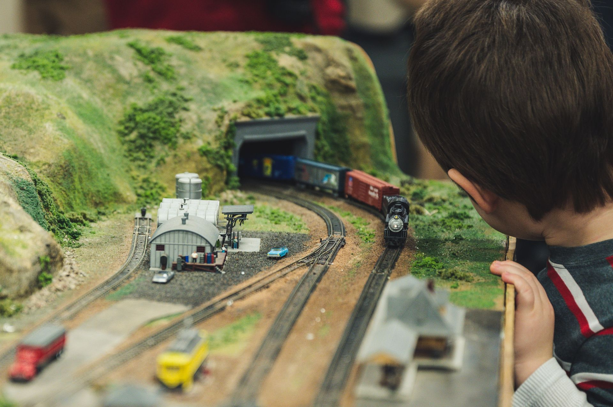
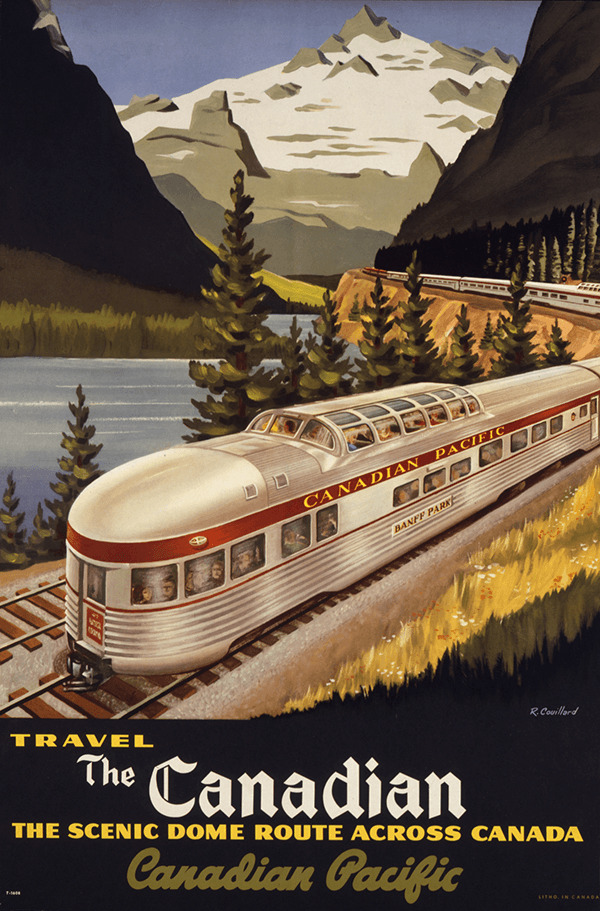

Nos expositions
Le Musée du Modélisme Ferroviaire et des Chemins de fer du Québec présente trois expositions permanentes qui plongent les visiteurs dans l'univers du rail, de la miniature à l'histoire régionale.
Exposition permanente
Réseaux miniatures en action
Plongez dans des univers miniatures où les trains circulent à travers des paysages inspirés du Québec. Ces réseaux animés reproduisent des scènes vivantes : locomotives franchissant des ponts de pierre, wagons serpentant dans les vallées, gares animées où les passagers attendent leur départ.
Découvrir cette exposition
Exposition permanente
Les gares régionales
Les gares ont longtemps été au cœur de la vie des communautés québécoises. Dans cette exposition, vous découvrirez des maquettes fidèles de plusieurs gares régionales, certaines toujours existantes, d'autres disparues avec le temps.
Découvrir cette exposition
Exposition permanente
Objets et souvenirs ferroviaires
Le musée abrite également une riche collection d'objets liés au monde ferroviaire : uniformes de cheminots, casquettes et insignes, lanternes de signalisation, outils de maintenance, billets d'époque et affiches publicitaires.
Découvrir cette exposition